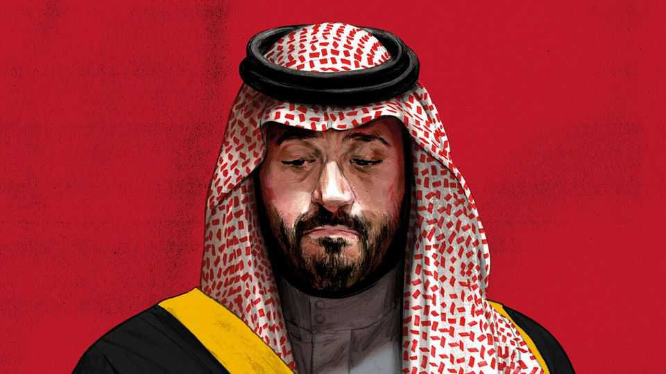

Everything is going wrong for Muhammad bin Salman
This is his annus horribilis

Oct 22nd 2026
IN ANY OTHER year, Muhammad bin Salman would be getting ready for his star turn. October 26th was supposed to have been the start of the Future Investment Initiative (FII), an annual summit in the Saudi capital that is sometimes dubbed “Davos in the desert”. The crown prince usually spends the week glad-handing heads of state, titans of finance and other dignitaries, all of them eager to do business with his kingdom.
Not this year. The Houthis, an Iran-backed militia in Yemen, have spent weeks firing missiles and drones at Riyadh. The airport is still, in effect, shut after a series of deadly attacks. Many Western governments have warned their citizens not to travel to the kingdom. Executives were nervous that hotels or other venues could be targets. After days of deliberation, organisers decided on October 19th to postpone the event until next year.
As he rose to power a decade ago, Prince Muhammad made a few big gambles. He wagered that he could defeat the Houthis; that he could reshape the Saudi economy; and that Donald Trump would prove a reliable ally. All of them have gone awry at once. The decision to cancel FII is emblematic of Prince Muhammad’s annus horribilis. He faces a set of interlocking crises, none of which has a ready solution.
The Saudis failed to defeat the Houthis, but they had hoped a ceasefire agreed on in 2022 would contain the threat. Instead the truce began to unravel this summer because of America’s broader war with Iran. The Houthis have seized additional territory in Yemen and battered Saudi Arabia. People close to the crown prince see only bad options. The kingdom can send ground troops into a bloody war; continue a campaign of air strikes that is unlikely to succeed; or make a deal that helps cement the Houthis’ rule in Yemen.
A long conflict will derail the prince’s economic programme, which was sputtering even before 2026. Big projects were being shelved amid a strain on public finances. Wages have not kept pace with inflation. Annual foreign direct investment is only about one-third of the crown prince’s $100bn target. A year ago the IMF expected the Saudi economy to grow by 4% in 2026; now it expects a 3.3% contraction.
Whether it rebounds in 2027 will depend on whether peace breaks out in the Middle East—and that will depend largely on Mr Trump. The kingdom thought it had influence over him. It wooed him by promising to invest implausible sums in America. It also made tawdry deals with the first family, paying Trump-owned golf courses to host Saudi-funded tournaments and investing $2bn with Jared Kushner, the president’s son-in-law. None of that stopped Mr Trump from embarking on a disastrous war. “He’s not loyal to anyone for long,” says one well-connected Saudi.
There are no reliable public-opinion polls in the kingdom, but it is fair to say most Saudis trust their government. Some have found recent weeks unnerving, nonetheless: the war in Yemen has caused real disruption. Yet since October 10th, when a Houthi missile killed 13 people at Riyadh’s airport, Prince Muhammad has been largely invisible. It fell to ministers to visit victims and offer reassuring messages.
A few Western commentators have begun to ask whether this crisis-filled year poses an existential threat to the crown prince’s rule. The view among diplomats in Riyadh is that such talk is overblown. “He was in a much tougher place seven or eight years ago,” says one Western envoy.
Back then the prince was a newly appointed heir, still consolidating his rule. The war in Yemen was already a quagmire, the blockade of Qatar was upsetting America, and much of the world was horrified when Jamal Khashoggi, a Saudi journalist, was murdered inside the kingdom’s consulate in Istanbul. Prince Muhammad’s grip on power is far more secure today: he has sidelined rivals and centralised power unlike any Saudi ruler since King Abdulaziz, the founder of the modern state. Though he certainly has his detractors, none could plausibly organise a putsch.
Nor is he facing much criticism from allies. The response to the recent escalation in Yemen has been telling: even long-time critics of the war are now willing to acknowledge that the kingdom has little choice but to fight. “I do understand that this is a different moment than 2018 or 2020. They are facing these Houthi advances and Houthi rocket attacks,” says Chris Murphy, a Democratic senator who met the crown prince in Riyadh this month. “We should recognise that.”
Seen in another light, though, this is a more challenging moment for Prince Muhammad. Because the woes of his early years were mostly self-inflicted, they were easier to fix. By 2021 he was steering Saudi foreign policy in a more pragmatic direction. He ended the blockade of Qatar and sought a deal with the Houthis. Even the Biden administration, which took office promising to make the crown prince a “pariah”, grudgingly praised his new direction.
This year is harder. The biggest decision is out of Prince Muhammad’s hands. He has urged Mr Trump not to escalate the war with Iran. If the president ignores him and resumes bombing after the midterm elections in November, Saudi officials worry the kingdom will take blows from all sides: the Houthis to the south, Iraqi militias to the north and Iran itself to the east. They have a big country to protect—four times the size of France—and not many air-defence interceptors left to do it.
In his first decade, the crown prince made laudable strides towards liberalising Saudi society. Women can drive. Female labour-force participation has almost doubled. Concerts and cinemas are now widespread in a country where fun was long verboten. A few well-off foreigners can even enjoy a legal tipple. But the core of the Saudi state has changed little. Its economy still depends on oil money, its army is still built to protect the regime rather than wage war, and its foreign policy still relies on America as an indispensable protector.
Perhaps eventually those things will change as well. The Mecca pact, a mutual-defence agreement with Pakistan and Turkey, is an effort to find new allies that could supplant a now unreliable America. But those changes will take time. In his second decade, the test for Saudi Arabia’s ruler will be to change the foundations, not just the façade. ■